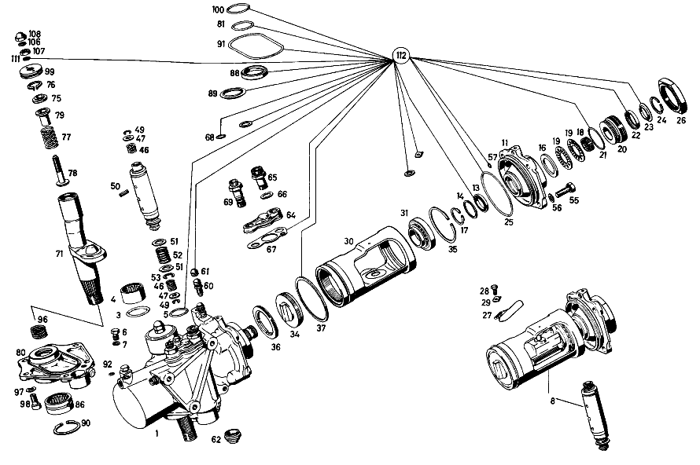

| № | Артикул | Название | Кол. | Примечание | Ограничение |
|---|---|---|---|---|---|
| 1 | A 114 460 10 01 | Рулевой механизм | 1 | Рулевое управление: Влево Z 10.831/01, Z 10.831/02, Z 10.831/03, Z 10.831/04 [697] ДЕТАЛЬ ПОСТАВЛЯЕТСЯ ТОЛЬКО/ИЛИ ТАКЖЕ КАК ЗАП.ЧАСТЬ | |
| 3 | A 001 997 02 45 | - Уплотнительное кольцо | - | Z 10.831/01, Z 10.831/02, Z 10.831/03, Z 10.831/04 | |
| 3 | A 013 997 36 48 | - УПЛОТНИТ. КОЛЬЦО | 1 | Z 10.831/01, Z 10.831/02, Z 10.831/03, Z 10.831/04 | |
| 4 | A 000 981 82 10 | - Игольчатый подшипник | 1 | Z 10.831/01, Z 10.831/02, Z 10.831/03, Z 10.831/04 | |
| 5 | A 001 997 25 45 | - Уплотнительное кольцо | 5 | Z 10.831/01, Z 10.831/02, Z 10.831/03, Z 10.831/04 | |
| 6 | A 112 997 00 30 | - Резьбовая пробка | 1 | Z 10.831/01, Z 10.831/02, Z 10.831/03, Z 10.831/04 | |
| 7 | A 000 997 87 20 | - Уплотнительное кольцо | 1 | Z 10.831/01, Z 10.831/02, Z 10.831/03, Z 10.831/04 | |
| 8 | A 114 460 06 85 | - ПОРШЕНЬ | 1 | Рулевое управление: Влево Z 10.831/01, Z 10.831/02, Z 10.831/03, Z 10.831/04 [417] БОЛЬШЕ НЕ ПОСТАВЛЯЕТСЯ, ЗАКАЗЫВАТЬ КОМПЛЕКТ ПОСТАВКИ | |
| 11 | A 112 460 20 14 | - КРЫШКА | 1 | Рулевое управление: Влево Z 10.831/01, Z 10.831/02, Z 10.831/03, Z 10.831/04 | |
| 13 | A 112 460 00 61 | - Уплотнительное кольцо | 1 | Z 10.831/01, Z 10.831/02, Z 10.831/03, Z 10.831/04 | |
| 14 | A 112 462 01 62 | - ШАЙБА УПОРНАЯ | 1 | Z 10.831/01, Z 10.831/02, Z 10.831/03, Z 10.831/04 | |
| 16 | A 112 461 01 62 | - ШАЙБА УПОРНАЯ | 1 | Z 10.831/01, Z 10.831/02, Z 10.831/03, Z 10.831/04 | |
| 17 | A 000 994 26 41 | - ПРЕДОХРАНИТЕЛЬ | 1 | Z 10.831/01, Z 10.831/02, Z 10.831/03, Z 10.831/04 | |
| 18 | A 000 981 63 10 | - Игольчатый подшипник | 1 | Z 10.831/01, Z 10.831/02, Z 10.831/03, Z 10.831/04 | |
| 19 | A 000 981 04 18 | - ПОДШИПНИК РОЛИКОВЫЙ | 2 | Z 10.831/01, Z 10.831/02, Z 10.831/03, Z 10.831/04 | |
| 20 | A 112 460 03 86 | - РЕЗЬБ. ПАТРОН | 1 | Z 10.831/01, Z 10.831/02, Z 10.831/03, Z 10.831/04 | |
| 21 | A 000 997 97 45 | - Уплотнительное кольцо | 1 | Z 10.831/01, Z 10.831/02, Z 10.831/03, Z 10.831/04 | |
| 22 | A 005 997 58 46 | - Уплотнительное кольцо | 1 | Z 10.831/01, Z 10.831/02, Z 10.831/03, Z 10.831/04 | |
| 23 | A 001 997 40 40 | - Уплотнительное кольцо | 1 | Z 10.831/01, Z 10.831/02, Z 10.831/03, Z 10.831/04 | |
| 24 | A 000 994 26 41 | - ПРЕДОХРАНИТЕЛЬ | 1 | Z 10.831/01, Z 10.831/02, Z 10.831/03, Z 10.831/04 | |
| 25 | A 001 997 26 45 | - УПЛОТНИТ. КОЛЬЦО | - | Z 10.831/01, Z 10.831/02, Z 10.831/03, Z 10.831/04 | |
| 25 | A 014 997 61 48 | - Уплотнительное кольцо | 1 | Z 10.831/01, Z 10.831/02, Z 10.831/03, Z 10.831/04 | |
| 26 | A 120 990 05 51 | - Двенадцатигранная гайка | 1 | Z 10.831/01, Z 10.831/02, Z 10.831/03, Z 10.831/04 | |
| 27 | A 108 995 04 20 | - ХОМУТ | 1 | Z 10.831/01, Z 10.831/02, Z 10.831/03, Z 10.831/04 | |
| 28 | A 120 990 05 20 | - болт | 1 | Z 10.831/01, Z 10.831/02, Z 10.831/03, Z 10.831/04 | |
| 29 | A 112 994 00 05 | - Стопорная шайба | 1 | Z 10.831/01, Z 10.831/02, Z 10.831/03, Z 10.831/04 | |
| 30 | A 114 460 12 85 | - ПОРШЕНЬ | 1 | Рулевое управление: Влево Z 10.831/01, Z 10.831/02, Z 10.831/03, Z 10.831/04 [417] БОЛЬШЕ НЕ ПОСТАВЛЯЕТСЯ, ЗАКАЗЫВАТЬ КОМПЛЕКТ ПОСТАВКИ | |
| 31 | A 000 981 46 27 | - РАД.-УПОРН. ПОДШИПНИК | 2 | Z 10.831/01, Z 10.831/02, Z 10.831/03, Z 10.831/04 | |
| 34 | A 112 466 19 05 | - КРЫШКА | 1 | Z 10.831/01, Z 10.831/02, Z 10.831/03, Z 10.831/04 | |
| 35 | A 001 994 51 41 | - ПРЕДОХРАНИТЕЛЬ | 1 | Z 10.831/01, Z 10.831/02, Z 10.831/03, Z 10.831/04 | |
| 36 | A 112 466 01 34 | - КОЛЬЦО РЕЗЬБОВОЕ | 1 | Z 10.831/01, Z 10.831/02, Z 10.831/03, Z 10.831/04 | |
| 37 | A 112 466 01 60 | - Уплотнительное кольцо | 1 | Z 10.831/01, Z 10.831/02, Z 10.831/03, Z 10.831/04 | |
| 46 | A 112 993 95 01 | - пружина | 2 | Z 10.831/01, Z 10.831/02, Z 10.831/03, Z 10.831/04 | |
| 47 | A 112 466 04 62 | - ШАЙБА УПОРНАЯ | 2 | *** 1.0MM Z 10.831/01, Z 10.831/02, Z 10.831/03, Z 10.831/04 [402] БОЛЬШЕ НЕ ПОСТАВЛЯЕТСЯ | |
| 49 | A 000 994 38 41 | - ПРЕДОХРАНИТЕЛЬ | 2 | Z 10.831/01, Z 10.831/02, Z 10.831/03, Z 10.831/04 | |
| 50 | A 112 991 01 41 | - ШТИФТ | 2 | Z 10.831/01, Z 10.831/02, Z 10.831/03, Z 10.831/04 | |
| 51 | A 112 466 02 75 | - ШАЙБА | 2 | Z 10.831/01, Z 10.831/02, Z 10.831/03, Z 10.831/04 | |
| 52 | A 112 993 19 02 | - ПРУЖИНА | 1 | Z 10.831/01, Z 10.831/02, Z 10.831/03, Z 10.831/04 | |
| 53 | A 000 994 54 41 | - ПРЕДОХРАНИТЕЛЬ | 1 | Z 10.831/01, Z 10.831/02, Z 10.831/03, Z 10.831/04 | |
| 55 | N 000933 010105 | - Винт | 4 | Z 10.831/01, Z 10.831/02, Z 10.831/03, Z 10.831/04 | |
| 56 | N 912004 010102 | - Пружинное кольцо | 4 | Z 10.831/01, Z 10.831/02, Z 10.831/03, Z 10.831/04 | |
| 57 | A 004 997 44 45 | - Уплотнительное кольцо | 1 | Z 10.831/01, Z 10.831/02, Z 10.831/03, Z 10.831/04 | |
| 60 | A 000 420 08 55 | - Клапан выпуска воздуха | 1 | Z 10.831/01, Z 10.831/02, Z 10.831/03, Z 10.831/04 | |
| 61 | A 000 421 08 87 | - Защитный колпачок | - | Z 10.831/01, Z 10.831/02, Z 10.831/03, Z 10.831/04 | |
| 61 | A 000 421 71 87 | - КОЛПАЧОК | 1 | Z 10.831/01, Z 10.831/02, Z 10.831/03, Z 10.831/04 | |
| 62 | A 112 466 11 05 | - КРЫШКА | 1 | Z 10.831/01, Z 10.831/02, Z 10.831/03, Z 10.831/04 | |
| 64 | A 112 466 12 05 | - КРЫШКА | 1 | Рулевое управление: Влево Z 10.831/01, Z 10.831/02, Z 10.831/03, Z 10.831/04 | |
| 65 | A 112 997 17 72 | - Штуцер | 1 | Z 10.831/01, Z 10.831/02, Z 10.831/03, Z 10.831/04 | |
| 66 | N 007603 014100 | - Уплотнительное кольцо | 1 | 14X18\-AL Z 10.831/01, Z 10.831/02, Z 10.831/03, Z 10.831/04 | |
| 67 | A 112 466 03 80 | - уплотнение | 1 | Z 10.831/01, Z 10.831/02, Z 10.831/03, Z 10.831/04 | |
| 68 | A 009 997 72 45 | - Уплотнительное кольцо | 1 | Z 10.831/01, Z 10.831/02, Z 10.831/03, Z 10.831/04 | |
| 69 | A 112 997 21 72 | - ШТУЦЕР | 1 | Z 10.831/01, Z 10.831/02, Z 10.831/03, Z 10.831/04 | |
| 71 | A 114 460 01 11 | - ВАЛ РУЛЕВОЙ | 1 | Z 10.831/01, Z 10.831/02, Z 10.831/03, Z 10.831/04 | |
| 75 | A 111 461 04 62 | - ШАЙБА УПОРНАЯ | 1 | Z 10.831/01, Z 10.831/02, Z 10.831/03, Z 10.831/04 | |
| 76 | A 000 994 46 41 | - предохранитель | - | Z 10.831/01, Z 10.831/02, Z 10.831/03, Z 10.831/04 [415] ПРИМЕЧ. ПО ЗАМЕНЕ ПРИМЕНИМО ТОЛЬКО ДЛЯ СТОЯЩИХ РЯДОМ ПОЗИЦИЙ | |
| 76 | A 004 994 92 41 | - предохранитель | 1 | Z 10.831/01, Z 10.831/02, Z 10.831/03, Z 10.831/04 | |
| 77 | A 111 993 21 01 | - ПРУЖИНА | 1 | Z 10.831/01, Z 10.831/02, Z 10.831/03, Z 10.831/04 | |
| 78 | A 111 462 04 71 | - Палец | 1 | Z 10.831/01, Z 10.831/02, Z 10.831/03, Z 10.831/04 | |
| 79 | A 111 462 04 85 | - УПОР ПРИЖИМНОЙ | 1 | Z 10.831/01, Z 10.831/02, Z 10.831/03, Z 10.831/04 | |
| 80 | A 109 460 02 15 | - КРЫШКА | 1 | Рулевое управление: Влево Z 10.831/01, Z 10.831/02, Z 10.831/03, Z 10.831/04 | |
| 81 | A 001 997 02 45 | - Уплотнительное кольцо | - | Z 10.831/01, Z 10.831/02, Z 10.831/03, Z 10.831/04 | |
| 81 | A 013 997 36 48 | - УПЛОТНИТ. КОЛЬЦО | 2 | Z 10.831/01, Z 10.831/02, Z 10.831/03, Z 10.831/04 | |
| 86 | A 000 981 81 10 | - Игольчатый подшипник | 1 | Z 10.831/01, Z 10.831/02, Z 10.831/03, Z 10.831/04 | |
| 88 | A 005 997 59 46 | - Уплотнительное кольцо | 1 | Z 10.831/01, Z 10.831/02, Z 10.831/03, Z 10.831/04 | |
| 89 | A 001 997 39 40 | - Уплотнительное кольцо | 1 | Z 10.831/01, Z 10.831/02, Z 10.831/03, Z 10.831/04 | |
| 90 | A 000 994 53 41 | - Стопорное кольцо | 2 | Z 10.831/01, Z 10.831/02, Z 10.831/03, Z 10.831/04 | |
| 91 | A 002 997 47 45 | - Уплотнительное кольцо | 1 | Z 10.831/01, Z 10.831/02, Z 10.831/03, Z 10.831/04 | |
| 92 | A 004 997 44 45 | - Уплотнительное кольцо | 2 | Z 10.831/01, Z 10.831/02, Z 10.831/03, Z 10.831/04 | |
| 96 | A 112 993 97 01 | - пружина | 1 | Z 10.831/01, Z 10.831/02, Z 10.831/03, Z 10.831/04 | |
| 97 | N 000137 008204 | - Пружинная шайба | 6 | Z 10.831/01, Z 10.831/02, Z 10.831/03, Z 10.831/04 | |
| 98 | N 000912 008096 | - Винт | - | Z 10.831/01, Z 10.831/02, Z 10.831/03, Z 10.831/04 | |
| 98 | N 000912 008202 | - Цилиндрич. винт | 6 | Z 10.831/01, Z 10.831/02, Z 10.831/03, Z 10.831/04 | |
| 99 | A 112 466 01 72 | - ГАЙКА | 1 | Z 10.831/01, Z 10.831/02, Z 10.831/03, Z 10.831/04 | |
| 100 | A 001 997 01 45 | - Уплотнительное кольцо | 1 | Z 10.831/01, Z 10.831/02, Z 10.831/03, Z 10.831/04 | |
| 106 | N 007603 010100 | - Уплотнительное кольцо | 2 | 10X13.5 AL Z 10.831/01, Z 10.831/02, Z 10.831/03, Z 10.831/04 | |
| 107 | A 108 990 00 51 | - ГАЙКА | 1 | Z 10.831/01, Z 10.831/02, Z 10.831/03, Z 10.831/04 | |
| 108 | N 001587 010001 | - Гайка | 1 | Z 10.831/01, Z 10.831/02, Z 10.831/03, Z 10.831/04 | |
| 111 | N 007603 010404 | - Уплотнительное кольцо | 3 | Z 10.831/01, Z 10.831/02, Z 10.831/03, Z 10.831/04 | |
| 112 | A 109 586 00 46 | РЕМКОМПЛЕКТ | - | Z 10.831/01, Z 10.831/02, Z 10.831/03, Z 10.831/04 | |
| 112 | A 109 460 02 61 | набор уплотнений | 1 | Z 10.831/01, Z 10.831/02, Z 10.831/03, Z 10.831/04 | |
| 113 | A 114 463 04 01 | РЫЧАГ НА РУЛЕВОЙ КОЛОНКЕ | 1 | Рулевое управление: Влево Z 10.831/01, Z 10.831/02, Z 10.831/03, Z 10.831/04 | |
| 114 | N 000937 022000 | Гайка | 1 | Z 10.831/01, Z 10.831/02, Z 10.831/03, Z 10.831/04 | |
| 115 | A 115 463 00 52 | Диск | 1 | Z 10.831/01, Z 10.831/02, Z 10.831/03, Z 10.831/04 | |
| 116 | A 114 997 12 82 | ШЛАНГ | 1 | Z 10.831/02, Z 10.831/03, Z 10.831/04 | |
| 117 | A 112 466 02 82 | КОЛЬЦО РЕЗИНОВОЕ | 1 | Z 10.831/01, Z 10.831/03, Z 10.831/04 | |
| 118 | A 115 460 06 24 | ПРОВОД | 1 | Рулевое управление: Вправо Z 10.831/02, Z 10.831/03 | |
| 119 | A 115 997 22 82 | ШЛАНГ | 1 | Рулевое управление: Вправо Z 10.831/02, Z 10.831/03 | |
| 120 | N 040621 020200 | Изоляционный шланг | 1 | *** 30mm Рулевое управление: Вправо Z 10.831/01, Z 10.831/02, Z 10.831/03, Z 10.831/04 [031] FOR REPAIRS ON SIDE MEMBER ONLY | |
| 121 | A 115 466 05 40 | ДЕРЖАТЕЛЬ | 1 | Рулевое управление: Вправо Z 10.831/01, Z 10.831/02, Z 10.831/03, Z 10.831/04 | |
| 122 | A 115 295 01 24 | БОЛТ НАТЯЖНОЙ | 1 | Рулевое управление: Вправо Z 10.831/01, Z 10.831/02, Z 10.831/03, Z 10.831/04 | |
| 123 | A 094 990 68 10 | Пружинное кольцо | 1 | Рулевое управление: Вправо Z 10.831/01, Z 10.831/02, Z 10.831/03, Z 10.831/04 | |
| 124 | N 000934 006013 | Гайка | - | Рулевое управление: Вправо Z 10.831/01, Z 10.831/02, Z 10.831/03, Z 10.831/04 | |
| 124 | N 304032 006008 | Шестигранная гайка | 1 | Рулевое управление: Вправо Z 10.831/01, Z 10.831/02, Z 10.831/03, Z 10.831/04 | |
| 125 | A 112 460 10 24 | Разветвитель трубы | 1 | Z 10.831/01, Z 10.831/02, Z 10.831/03, Z 10.831/04 | |
| 127 | A 006 997 09 82 | Шланг | NB | ЗАКАЗЫВАТЬ ПОГОННЫМИ МЕТРАМИ Z 10.831/01, Z 10.831/02, Z 10.831/03, Z 10.831/04 | |
| 130 | A 000 990 41 33 | - БОЛТ | 1 | Z 10.831/01, Z 10.831/02, Z 10.831/03, Z 10.831/04 | |
| 131 | A 000 466 03 73 | - Стопорная шайба | 1 | Z 10.831/01, Z 10.831/02, Z 10.831/03, Z 10.831/04 | |
| 132 | A 000 236 00 55 | - Фильтр | 1 | Z 10.831/01, Z 10.831/02, Z 10.831/03, Z 10.831/04 | |
| 133 | A 000 236 00 76 | - Крышка | 1 | Z 10.831/01, Z 10.831/02, Z 10.831/03, Z 10.831/04 | |
| 134 | A 001 993 14 01 | - пружина | 1 | Z 10.831/01, Z 10.831/02, Z 10.831/03, Z 10.831/04 | |
| 135 | A 000 460 12 82 | - КРЫШКА | 1 | Z 10.831/01, Z 10.831/02, Z 10.831/03, Z 10.831/04 | |
| 136 | A 000 236 00 80 | - Уплотнительная прокладка | 1 | Z 10.831/01, Z 10.831/02, Z 10.831/03, Z 10.831/04 | |
| 137 | N 000315 006004 | Гайка | 1 | Z 10.831/01, Z 10.831/02, Z 10.831/03, Z 10.831/04 | |
| 140 | N 900288 092100 | Хомут | 1 | Z 10.831/01, Z 10.831/02, Z 10.831/03, Z 10.831/04 | |
| A 114 460 11 01 | РУЛЕВОЕ УПРАВЛЕНИЕ | 1 | Рулевое управление: Вправо Z 10.831/01, Z 10.831/02, Z 10.831/03, Z 10.831/04 [697] ДЕТАЛЬ ПОСТАВЛЯЕТСЯ ТОЛЬКО/ИЛИ ТАКЖЕ КАК ЗАП.ЧАСТЬ | ||
| A 114 460 07 85 | - ПОРШЕНЬ | 1 | Рулевое управление: Вправо Z 10.831/01, Z 10.831/02, Z 10.831/03, Z 10.831/04 [417] БОЛЬШЕ НЕ ПОСТАВЛЯЕТСЯ, ЗАКАЗЫВАТЬ КОМПЛЕКТ ПОСТАВКИ | ||
| A 112 460 11 14 | - КРЫШКА | - | Z 10.831/01, Z 10.831/02, Z 10.831/03, Z 10.831/04 | ||
| A 112 460 12 14 | - КРЫШКА | - | Z 10.831/01, Z 10.831/02, Z 10.831/03, Z 10.831/04 | ||
| A 112 460 21 14 | - КРЫШКА | 1 | Рулевое управление: Вправо Z 10.831/01, Z 10.831/02, Z 10.831/03, Z 10.831/04 | ||
| A 000 981 08 18 | - ПОДШИПНИК РОЛИКОВЫЙ | - | Z 10.831/01, Z 10.831/02, Z 10.831/03, Z 10.831/04 [402] БОЛЬШЕ НЕ ПОСТАВЛЯЕТСЯ | ||
| A 000 981 14 18 | - ПОДШИПНИК РОЛИКОВЫЙ | - | Z 10.831/01, Z 10.831/02, Z 10.831/03, Z 10.831/04 [402] БОЛЬШЕ НЕ ПОСТАВЛЯЕТСЯ | ||
| A 114 460 13 85 | - ПОРШЕНЬ | 1 | Рулевое управление: Вправо Z 10.831/01, Z 10.831/02, Z 10.831/03, Z 10.831/04 [417] БОЛЬШЕ НЕ ПОСТАВЛЯЕТСЯ, ЗАКАЗЫВАТЬ КОМПЛЕКТ ПОСТАВКИ | ||
| A 112 466 05 62 | - ШАЙБА УПОРНАЯ | 2 | *** 1.1MM Z 10.831/01, Z 10.831/02, Z 10.831/03, Z 10.831/04 [402] БОЛЬШЕ НЕ ПОСТАВЛЯЕТСЯ | ||
| A 112 466 06 62 | - ШАЙБА УПОРНАЯ | 2 | *** 1.2MM Z 10.831/01, Z 10.831/02, Z 10.831/03, Z 10.831/04 [402] БОЛЬШЕ НЕ ПОСТАВЛЯЕТСЯ | ||
| A 112 466 07 62 | - ШАЙБА УПОРНАЯ | 2 | *** 1.3MM Z 10.831/01, Z 10.831/02, Z 10.831/03, Z 10.831/04 [402] БОЛЬШЕ НЕ ПОСТАВЛЯЕТСЯ | ||
| A 112 466 08 62 | - ШАЙБА УПОРНАЯ | - | Z 10.831/01, Z 10.831/02, Z 10.831/03, Z 10.831/04 | ||
| A 112 466 09 62 | - ШАЙБА УПОРНАЯ | - | *** 1.4MM Z 10.831/01, Z 10.831/02, Z 10.831/03, Z 10.831/04 [402] БОЛЬШЕ НЕ ПОСТАВЛЯЕТСЯ [030] NOT AVAILABLE,INSTEAD: REWORK 112 466 09 62 UP TO 1.4 MM | ||
| A 112 466 09 62 | - ШАЙБА УПОРНАЯ | 2 | *** 1.5MM Z 10.831/01, Z 10.831/02, Z 10.831/03, Z 10.831/04 [402] БОЛЬШЕ НЕ ПОСТАВЛЯЕТСЯ | ||
| A 112 466 10 62 | - ШАЙБА УПОРНАЯ | 2 | *** 1.6MM Z 10.831/01, Z 10.831/02, Z 10.831/03, Z 10.831/04 [402] БОЛЬШЕ НЕ ПОСТАВЛЯЕТСЯ | ||
| A 112 466 11 62 | - ШАЙБА УПОРНАЯ | 2 | *** 1.7MM Z 10.831/01, Z 10.831/02, Z 10.831/03, Z 10.831/04 [402] БОЛЬШЕ НЕ ПОСТАВЛЯЕТСЯ | ||
| A 112 466 12 62 | - ШАЙБА УПОРНАЯ | 2 | *** 1.8MM Z 10.831/01, Z 10.831/02, Z 10.831/03, Z 10.831/04 [402] БОЛЬШЕ НЕ ПОСТАВЛЯЕТСЯ | ||
| A 112 466 13 62 | - ШАЙБА УПОРНАЯ | 2 | *** 1.9MM Z 10.831/01, Z 10.831/02, Z 10.831/03, Z 10.831/04 [402] БОЛЬШЕ НЕ ПОСТАВЛЯЕТСЯ | ||
| A 112 466 14 62 | - Прижимная шайба | 2 | ПО НЕОБХОДИМОСТИ 2.0 MM Z 10.831/01, Z 10.831/02, Z 10.831/03, Z 10.831/04 [409] ПРИ МОНТАЖЕ ПОДОГНАТЬ ПО МЕСТУ | ||
| N 912004 010102 | - Пружинное кольцо | - | Z 10.831/01, Z 10.831/02, Z 10.831/03, Z 10.831/04 [415] ПРИМЕЧ. ПО ЗАМЕНЕ ПРИМЕНИМО ТОЛЬКО ДЛЯ СТОЯЩИХ РЯДОМ ПОЗИЦИЙ | ||
| A 112 466 14 05 | - КРЫШКА | 1 | Рулевое управление: Вправо Z 10.831/01, Z 10.831/02, Z 10.831/03, Z 10.831/04 | ||
| A 000 997 75 45 | - УПЛОТНИТ. КОЛЬЦО | - | Z 10.831/01, Z 10.831/02, Z 10.831/03, Z 10.831/04 [415] ПРИМЕЧ. ПО ЗАМЕНЕ ПРИМЕНИМО ТОЛЬКО ДЛЯ СТОЯЩИХ РЯДОМ ПОЗИЦИЙ | ||
| A 112 460 09 15 | - КРЫШКА | - | Рулевое управление: Влево Z 10.831/01, Z 10.831/02, Z 10.831/03, Z 10.831/04 | ||
| A 112 460 10 15 | - КРЫШКА | - | Рулевое управление: Вправо Z 10.831/01, Z 10.831/02, Z 10.831/03, Z 10.831/04 | ||
| A 109 460 03 15 | - КРЫШКА | 1 | Рулевое управление: Вправо Z 10.831/01, Z 10.831/02, Z 10.831/03, Z 10.831/04 | ||
| A 009 997 72 45 | - Уплотнительное кольцо | 2 | Z 10.831/01, Z 10.831/02, Z 10.831/03, Z 10.831/04 | ||
| A 000 997 87 20 | - Уплотнительное кольцо | 2 | Z 10.831/01, Z 10.831/02, Z 10.831/03, Z 10.831/04 | ||
| A 123 990 02 01 | БОЛТ | - | Z 10.831/01, Z 10.831/02, Z 10.831/03, Z 10.831/04 | ||
| A 201 990 08 01 | болт | 3 | *** 80mm Z 10.831/01, Z 10.831/02, Z 10.831/03, Z 10.831/04 [031] FOR REPAIRS ON SIDE MEMBER ONLY | ||
| A 114 463 05 01 | РЫЧАГ НА РУЛЕВОЙ КОЛОНКЕ | 1 | Рулевое управление: Вправо Z 10.831/01, Z 10.831/02, Z 10.831/03, Z 10.831/04 | ||
| N 000094 005033 | Шплинт | 1 | Z 10.831/01, Z 10.831/02, Z 10.831/03, Z 10.831/04 | ||
| A 115 997 11 82 | ШЛАНГ | - | Z 10.831/01, Z 10.831/02, Z 10.831/03 | ||
| A 114 997 03 82 | ШЛАНГ | - | Z 10.831/01, Z 10.831/02, Z 10.831/03 | ||
| A 115 466 00 82 | Резиновое кольцо | 1 | Z 10.831/02, Z 10.831/03 | ||
| A 115 460 02 24 | ПРОВОД | 1 | Рулевое управление: Вправо Z 10.831/02, Z 10.831/03 | ||
| A 115 460 04 24 | ПРОВОД | - | Рулевое управление: Вправо Z 10.831/02, Z 10.831/03 | ||
| A 115 997 18 82 | ШЛАНГ | 1 | Рулевое управление: Вправо Z 10.831/02, Z 10.831/03 | ||
| A 115 997 24 82 | ШЛАНГ | 1 | Рулевое управление: Вправо Z 10.831/02, Z 10.831/03 | ||
| N 007976 005205 | Шуруп | 1 | Рулевое управление: Вправо Z 10.831/02, Z 10.831/03 | ||
| N 000125 006421 | Шайба | 1 | Рулевое управление: Вправо Z 10.831/02, Z 10.831/03 | ||
| A 108 546 02 53 | РАСПОРН. ТРУБКА | 1 | Рулевое управление: Вправо Z 10.831/02, Z 10.831/03 [402] БОЛЬШЕ НЕ ПОСТАВЛЯЕТСЯ | ||
| N 073379 008100 | Шланг | 1 | *** 30mm Рулевое управление: Вправо Z 10.831/02, Z 10.831/03 [031] FOR REPAIRS ON SIDE MEMBER ONLY | ||
| A 115 466 04 40 | ДЕРЖАТЕЛЬ | - | Рулевое управление: Вправо Z 10.831/02, Z 10.831/03 | ||
| A 094 995 15 00 | хомут | - | Рулевое управление: Вправо Z 10.831/02, Z 10.831/03 | ||
| A 110 995 04 01 | хомут | 1 | Рулевое управление: Вправо Z 10.831/02, Z 10.831/03 | ||
| N 000125 005317 | Шайба | - | Рулевое управление: Вправо Z 10.831/01, Z 10.831/02, Z 10.831/03, Z 10.831/04 | ||
| N 000433 005304 | Шайба | 1 | 5mm Рулевое управление: Вправо Z 10.831/01, Z 10.831/02, Z 10.831/03, Z 10.831/04 | ||
| N 007976 004217 | Шуруп | - | Рулевое управление: Вправо Z 10.831/01, Z 10.831/02, Z 10.831/03, Z 10.831/04 | ||
| N 914128 004303 | Шуруп | 1 | 4.8X9.5 MM Рулевое управление: Вправо Z 10.831/01, Z 10.831/02, Z 10.831/03, Z 10.831/04 | ||
| A 112 997 61 82 | ШЛАНГ | 1 | Рулевое управление: Вправо Z 10.831/02, Z 10.831/03 | ||
| A 114 460 03 24 | ПРОВОД | 1 | Рулевое управление: Вправо Z 10.831/01, Z 10.831/02, Z 10.831/03, Z 10.831/04 | ||
| N 916026 020001 | Хомут | - | 20\-27 MM Z 10.831/01, Z 10.831/02, Z 10.831/03, Z 10.831/04 | ||
| N 000000 000667 | Хомут | 4 | 23\-30 MM Z 10.831/01, Z 10.831/02, Z 10.831/03, Z 10.831/04 | ||
| A 110 987 05 41 | Кольцо | 1 | Z 10.831/01, Z 10.831/02, Z 10.831/03, Z 10.831/04 | ||
| A 115 460 02 83 | МАСЛЯНЫЙ БАЧОК | 1 | Z 10.831/03 | ||
| A 115 460 38 35 | Кронштейн | 1 | Z 10.831/03 | ||
| N 000934 006013 | Гайка | - | Z 10.831/03 | ||
| N 304032 006008 | Шестигранная гайка | 1 | Z 10.831/03 | ||
| A 094 990 68 10 | Пружинное кольцо | 1 | Z 10.831/03 |
Позиций: 163 · подписано на схемах: 104 · колесо — плавный зум в курсор, перетаскивание — пан, двойной клик — зум, клик по артикулу — скопировать.